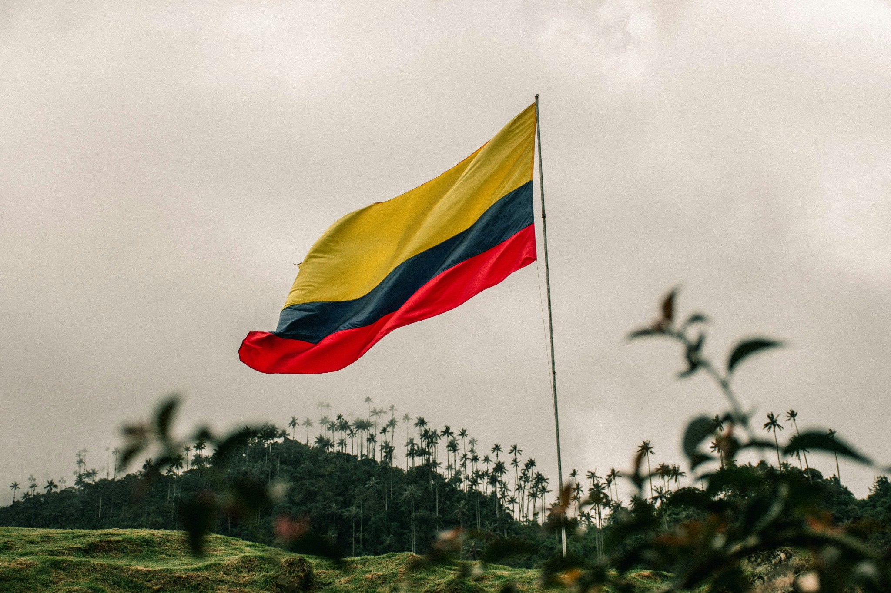

Voices in the Storm: Colombia’s Political Reality Today
Colombia’s political landscape is increasingly dynamic. Despite the challenges of a polarized society, there's a growing awareness and participation in politics, especially among young people. This engagement has led to significant strides in the fight for transparency and the reduction of corruption. Colombia’s political system, once marred by scandal and distrust, is gradually becoming more inclusive, with debates being stronger, more open, and inclusive of all segments of society.
Recent changes, such as the peace agreement with the FARC and efforts towards inclusion, have been major steps forward, although many obstacles remain. The young generation is determined to build a more transparent, accountable system. Despite the slow pace of reforms, democracy in Colombia is very much alive and evolving.
The Green Jewel of the Continent: Colombia’s Natural Beauty

With two oceans, the Amazon, deserts, snow-capped mountains, and over 50 national parks, Colombia is the second most biodiverse country in the world. It's a dream destination for ecotourism and adventure.
Liquid Gold: Colombian Coffee Around the World

Colombian coffee is a symbol of national pride. Harvested in stunning mountain landscapes, it's renowned globally for its flavour and quality, representing family tradition and rural culture.
Five Cities, Five Reasons to Believe
Bogotá
The capital is Colombia’s cultural and political heart, filled with art, bike lanes, and panoramic views from Monserrate.
Medellín

Once violent, now innovative. Medellín leads in urban transformation with projects like the Metrocable and digital hubs.
Cali

Cradle of salsa and Afro-Colombian culture, Cali vibrates with music, colour, and resilience.
Barranquilla

Home to the world-famous Carnival, Barranquilla blends Caribbean joy with industrial growth.
Bucaramanga

Set near Chicamocha Canyon, this peaceful city leads in green planning and high quality of life.
From Shadows to Light: Colombia in the 90s vs Now
The 90s were dark: bombings, cartels, fear. But Colombia rebuilt from within. Today, art, education and peace initiatives are the norm.
The Colombia of the 90s is not the same. While the memories of that dark time are still present in the country's collective consciousness, today, Colombia stands as a country that has learned from its mistakes, rebuilt itself and is now a symbol of resilience and hope in Latin America.
The Future of Colombia
The future of Colombia looks incredibly promising. With an increasing focus on sustainability, technology, and education, the country is stepping confidently into the 21st century. Colombian youth are leading the charge for social and economic reform, driven by innovation and the desire to change the narrative that once defined the country.
In the future, Colombia will continue to be a major player in Latin America, not just for its natural beauty but for its technological advances, social progress, and growing position as an international economic hub. The future is bright for Colombia as the country continues to embrace change and redefine itself as a global leader in peace, technology, and culture.
Bogotá
La capital de Colombia, **Bogotá**, es mucho más que el centro político del país. Situada a más de 2,600 metros sobre el nivel del mar, esta ciudad es un crisol de culturas y arte. Desde el majestuoso **Monserrate**, con su vista panorámica de la ciudad, hasta el vibrante **Candelaria**, el centro histórico lleno de coloridas calles empedradas y arquitectura colonial, Bogotá te invita a explorar su historia mientras te mantiene en contacto con su vida moderna.
Además de su arquitectura histórica, Bogotá es el hogar de importantes museos como el **Museo del Oro**, que alberga una de las colecciones más grandes de arte precolombino, y el **Museo Botero**, con las impresionantes obras del famoso artista colombiano Fernando Botero. No hay que olvidar su gastronomía, que refleja una fusión de influencias internacionales y autóctonas, y su oferta cultural que se extiende con eventos como el **Festival Iberoamericano de Teatro**.
Medellín
**Medellín** fue una ciudad conocida mundialmente por su violencia durante los años 80 y 90. Hoy, es un ejemplo de transformación urbana y social. Conocida por su cálido clima y su gente amable, Medellín ha evolucionado y hoy se presenta como una ciudad dinámica, **vibrante y llena de innovación**.
Una de las características más icónicas de Medellín es su **Metrocable**, un sistema de teleféricos que conecta los barrios de las laderas de la ciudad con el resto de la urbe, un símbolo de inclusión y superación. Además, Medellín es el hogar de eventos como la **Feria de las Flores**, un homenaje a la cultura antioqueña, y la famosa **Plaza Botero**, donde se pueden ver las esculturas de Fernando Botero que dan vida a la ciudad. Esta es una ciudad que ha logrado, a través de la educación y la cultura, superar sus oscuros momentos del pasado.
Cali
Cali, la **capital de la salsa**, es sin duda una de las ciudades más alegres y rítmicas de Colombia. A orillas del río **Cali**, la ciudad se llena de música y color durante el **Festival Mundial de Salsa** y la **Feria de Cali**, uno de los eventos más importantes de la ciudad. Pero Cali es mucho más que salsa: es un lugar donde se celebra la cultura afrocolombiana, con una vibrante escena de danza, arte y teatro.
Uno de los lugares más emblemáticos de Cali es el **Cristo Rey**, una estatua gigante de Cristo que se alza sobre la ciudad y ofrece una vista espectacular del valle del río Cauca. La ciudad también es famosa por sus parques, como el **Parque de los Gatos** y el **Parque del Perro**, que ofrecen un respiro en medio de su vida urbana vibrante.
Barranquilla
**Barranquilla** es la **capital del Carnaval**, y no solo porque sea una de las fiestas más grandes de Colombia, sino porque esta ciudad caribeña es una mezcla de culturas, colores y sonidos. Su **Carnaval de Barranquilla** ha sido declarado **Patrimonio de la Humanidad** por la UNESCO, y durante esta celebración, las calles se llenan de desfiles, danzas, música y disfraces.
La ciudad no solo es famosa por su Carnaval, sino también por su crecimiento como un **centro industrial y comercial** clave en la región Caribe. **Barranquilla** tiene una fuerte identidad cultural, que se refleja tanto en su música como en su arquitectura, con influencias que van desde la época colonial hasta el art déco. La **Calle 84** es un ejemplo de esta fusión, con su vida nocturna y sus restaurantes que sirven lo mejor de la gastronomía costeña.
Bucaramanga
**Bucaramanga** es una ciudad de contrastes, donde lo moderno y lo natural se encuentran en armonía. Conocida como la **ciudad de los parques**, Bucaramanga tiene más de 160 áreas verdes, como el **Parque del Chicamocha**, que ofrece una impresionante vista del **Cañón de Chicamocha**, uno de los paisajes más espectaculares de Colombia.
Además de su belleza natural, Bucaramanga es una ciudad con un fuerte **enfoque en la educación** y la innovación. Se ha convertido en un **polo de desarrollo** en el noreste de Colombia, con una infraestructura moderna, una excelente calidad de vida y una población amigable y acogedora. Su arquitectura, que combina lo clásico y lo moderno, y sus **centros comerciales** y **restaurantes** hacen de Bucaramanga una ciudad que tiene todo para ofrecer.